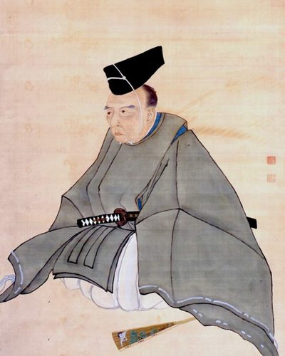

Ideologies / Nationalist
What is Kokutai Thought?
Kokutai Thought is a political ideology in the Nationalist family. Aizawa gave the word kokutai, the national polity, its political sense: Japan is a unity of ritual and government under an emperor descended from the sun goddess. The 1937 Ministry of Education text made this the official creed. It teaches that subjects find their purpose in loyalty and filial piety toward the throne, and it rejects Western individualism as the common root of liberalism, socialism and communism. It was the orthodoxy of the wartime Japanese state.
One nation as one family under a divine and unbroken imperial line.
Defined from: Aizawa Seishisai; Japanese Ministry of Education, New Theses (1825) and Kokutai no Hongi (1937)
See how close you are to Kokutai Thought Dare a friend to answer as one


Where Kokutai Thought stands on 13 axes
Each axis runs from 0 to 100. A score of 50 is the middle. On a classic compass it sits in the Authoritarian Right quadrant.
| Axis | Position | Score | In words |
|---|---|---|---|
| EconomyMarket to Planned | 60 | Leans Planned | |
| OwnershipPrivate to Collective | 35 | Leans Private | |
| RightsLiberty to Security | 90 | Very strongly Security | |
| GovernmentDemocracy to Autocracy | 100 | Very strongly Autocracy | |
| StructureDecentralised to Centralised | 95 | Very strongly Centralised | |
| NationInternationalist to Nationalist | 100 | Very strongly Nationalist | |
| ImmigrationMulticulturalist to Assimilationist | 95 | Very strongly Assimilationist | |
| ValuesProgressive to Traditional | 95 | Very strongly Traditional | |
| TechnologyAccelerationist to Precautionary | 50 | Balanced | |
| EnvironmentIndustrialist to Environmentalist | 45 | Balanced | |
| ReligionSecular to Religious | 100 | Very strongly Religious | |
| MilitaryPacifist to Militarist | 90 | Very strongly Militarist | |
| TradeFree Trade to Protectionist | 75 | Strongly Protectionist |
Ideologies closest to Kokutai Thought
- Falangism90% alike
- Brazilian Integralism87% alike
- Khomeinism82% alike
- Estado Novo Corporatism (Salazarism)80% alike
- Austrofascism80% alike
Its opposite on this map is Anarcha Feminism, at 9%.
Parties near Kokutai Thought
- National Fascist PartyItaly. The Doctrine of Fascism (1932)79% alike
- Law and JusticePoland. Polski model państwa dobrobytu (2019)72% alike
- United RussiaRussia. People's Programme (2021)72% alike
- Bharatiya Janata PartyIndia. Modi Ki Guarantee (2024)70% alike
Common questions
What is Kokutai Thought?
Kokutai Thought is a political ideology in the Nationalist family. Aizawa gave the word kokutai, the national polity, its political sense: Japan is a unity of ritual and government under an emperor descended from the sun goddess. The 1937 Ministry of Education text made this the official creed. It teaches that subjects find their purpose in loyalty and filial piety toward the throne, and it rejects Western individualism as the common root of liberalism, socialism and communism. It was the orthodoxy of the wartime Japanese state.
What does Kokutai Thought believe?
In one line: One nation as one family under a divine and unbroken imperial line. Its strongest positions are Autocracy, Nationalist, Religious. Aizawa gave the word kokutai, the national polity, its political sense: Japan is a unity of ritual and government under an emperor descended from the sun goddess. The 1937 Ministry of Education text made this the official creed. It teaches that subjects find their purpose in loyalty and filial piety toward the throne, and it rejects Western individualism as the common root of liberalism, socialism and communism. It was the orthodoxy of the wartime Japanese state.
Who founded Kokutai Thought?
Kokutai Thought is defined here from New Theses (1825) and Kokutai no Hongi (1937) by Aizawa Seishisai; Japanese Ministry of Education. The thinker most tied to it is Aizawa Seishisai (1782 to 1863).
Is Kokutai Thought left wing or right wing?
On a classic two axis compass Kokutai Thought falls in the Authoritarian Right quadrant, which means the economic centre and the authoritarian side. Left and right hide a lot, though, which is why EthosScales scores it on thirteen separate axes.
How is Kokutai Thought different from Falangism?
They are close: 90% alike. The biggest gaps are on Ownership, where Kokutai Thought scores 35 and Falangism scores 50, and Economy, where Kokutai Thought scores 60 and Falangism scores 70. On each axis, 0 is one end and 100 is the other.
Think this is wrong? Suggest a correction. The scores are editorial estimates.